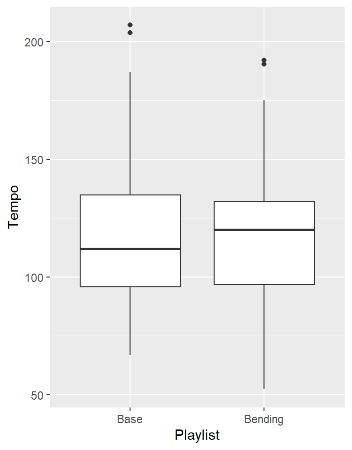
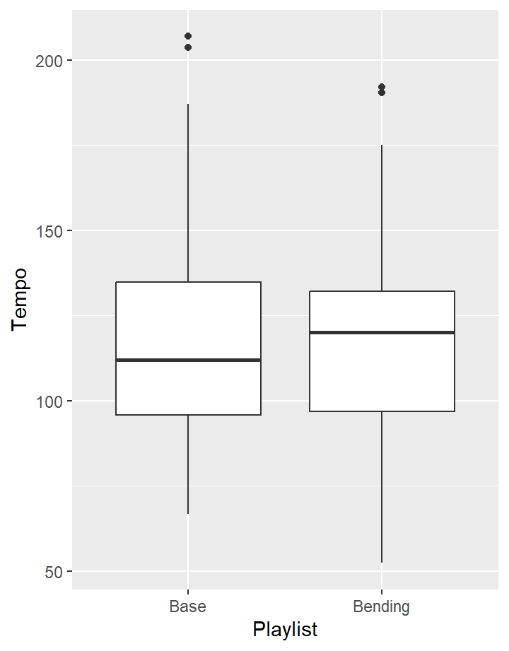
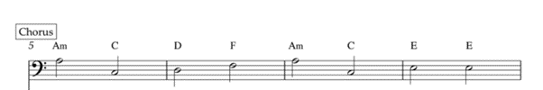
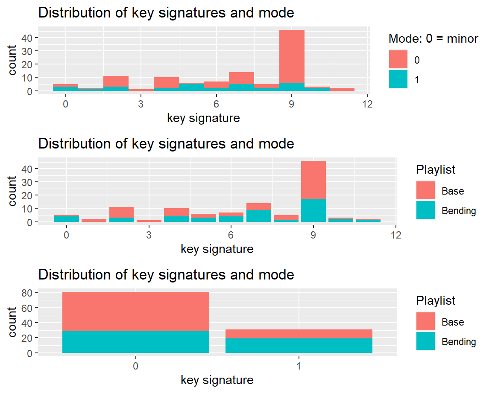
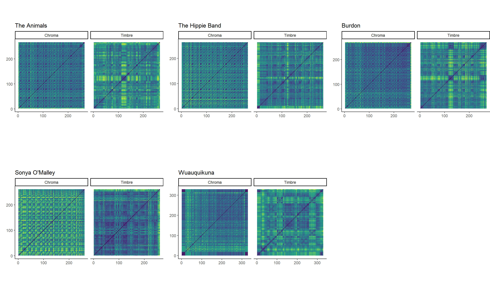

1. Corpus
Introduction
The house of the rising sun is an old folk song and like most folk
songs the exact origins and author are unknown. The oldest published
lyrics were written down by Robert Winslow Gordon, an academic collector
of folk songs, in 1925. Throughout the last century many different
covers of the song have been made with many different styles. Arguably
the most well known version is of course the one by The Animals from
1964. Its Iconic arpeggio chords, the haunting vocals and the synth
solo. Most people will point at this version of the song as the version
of the house of the rising song that they know.
However, many covers have been made of the song, 120 of which are in the
corpus. Ranging from covers that stay very true to, what we will take as
the original song, the Animals version, all the way to covers that
take most people a little time to recognize. But what makes a cover a
very different style version of a song, but still recognisable? And is
there a way to classify songs as a very similar style version as opposed
to a very different one?
This portfolio tries to answer which features are most important in
classifying covers that are very similar to the original and covers that
are very different from the original, when splitting the songs on genre.
Looking at the differences between all the covers in the large
collection, to see whether certain the Spotify generated features or
lower level track analysis will show a good way to make a
distinction.
In the end the theory will be tested by training a random forest model
on the features that were found to see whether they make a good
classification tool to make a good distinction between the similar
genres and the genres that differ a lot from the Animals version of the
house of the rising sun.

Explanation of the song
The concept of making covers of a song is interesting, as what makes it a cover and what makes it a different song? These covers all lean heavily one of two things, if not both: lyrics and motif.
Some tracks are fully instrumental, but most of them will include a
version of the lyrics. The Animals version shows a chorus, verse,
bridge, verse, chorus structure, with a solo just before the
bridge.
Most tracks also rely on the motif and chord progression of the
song:
Am - C - D - F - Am - C - E7
I - III - IV - VI - I - III - V7

Some change the time signature, but the intervals generaly stay thesame throughout the entire corpus.
Lyrics
There is a house in New Orleans They call the Risin Sun And its
been the ruin of many a poor boy And God, I know Im one
My mother was a tailor She sewed my new blue jeans My father was a
gamblin man Down in New Orleans
Now, the only thing a gambler needs Is a suitcase and a trunk And the
only time that hes satisfied Is when hes all a-drunk Oh, Mother, tell
your children Not to do what I have done. Spend your lives in sin and
misery In the house of the risin sun
Well, now one foot on the platform The other foot on the train Im
going back to New Orleans To wear that ball and chain
Well, there is a house in New Orleans They call the Risin Sun And its been the ruin of many a poor boy And God, I know Im one
Genre distribution
This is the divide of the corpus into the two genre playlists:
The divide was made by hand and resulted in these genre distributions
(chosic, 2023):

Generally, songs in the same genre have the same feel. As this corpus
is made up of versions of the same song (in the sense of motif and
lyrics), the main difference would be the style of playing this song.
The songs that sound the most different are the ones played in a
copmletely different style to the original. Thus the seperation of the
corpus into two playlists was done based on genre (or my perception of
it).
The two playlists: one base genre playlist that adheres to the most appearing genres: rock, folk, country and blues and one genre bending playlist that includes many different genres, from scat jazz to Hip Hop.
2. Visualisations
Inputs
House of the Rising Sun
Stats on the corpus

The first plot shows that most of the versions uphold the Am key of
the original, but there is still some distribution. You can see that as
soon as people start playing around with the key they are more likely to
change the mode as well.
The second plot shows that the distribution of the key signatures is
fairly equal. The third plot however shows the major mode is used much
more frequently in the bending playlist.
It is fairly easy to change the key of a piece as one can simply
modulate all the notes of a piece. However changing the mode of a piece
can influence the vibe of the piece, which might be tied into changing
the genre.
Tempo

The average tempo of the Base playlist seems to be around 110 BPM and the that of the Bending playlist slightly higher at 120 BPM. The overall spread of the tempos seems to be relatively equal. Both lists having only to outliers.
Liveness, valence and instrumentalness
The plot shows liveness to be relatively clustered, with just a handful of tracks going above 0.35. Valence on the other hand is relatively spread out, but does not make a clear distinction for either playlist. Instrumentalness seems to be favoring the lower end with the base genres, but is not very clear.
Focus on Instrumentalness
This plot shows how the instrumentalness level throughout the entire corpus. The base genres dominate the lower end of the scale while the bending genres have a slight upperhand on the high end.
Energy, loudness and speechiness
The plot shows that the entire corpus does not contain any songs with
high levels of speechiness. The highest would be the versions of Gregory
Isaacs and Public enemy, reggae and HipHop respectively. But even they
dont go above 0.3 in a 0-1 scale.
The entire corpus has a wide distribution on energy but the loudest and
ones with the most energy seem to all be from the bending playlist. Most
of them related to metal, thus not surprising results.
Focus on Energy
This plot shows how the energy throughout the entire corpus. It shows the base genres have a lower energy, while the bending genres are more evenly distrubuted in the energy.
3. Track level
Clustering

To get a first understanding of what songs are similar the entire
corpus was clustered. For the clustering a hierarchical clustering
algorithm was used. The different splits are showcased in the
dendrogram. The dendrogram shows a few clusters that are parted into the
two genre playlists fairly well, but it is clear that this clustering
doesnt provide a good distinction between the base and bending
playlists.
The Animals version is clustered into the middle into the very clean
base genre cluster. The songs that it is percieved to be most similar to
are: Eric Burdon and The Hippie Band. The songs that it is percieved to
be very different from are: Sonja Malley, Somi and Wuauquikana.
These are the songs we will take into the lower level track
analysis.
Sectioning

These selfsimilarity matrices show the structures that the piece has
when it comes to chroma or timbre features. These songs are the most
similar and different within the corpus.
The Animals version shows a slight chorus-verse structures with a very
different bridge in the middle of the song. The Hippie and Burdon
versions show a very similar build up and also simulate the melody
repeating that the chromagram shows with the very small block
pattern.
The Sonja and Wuauquikuna version also show this melody pattern in the
chromagram which suggests they use the same melody (which is true
listening to the songs), but show a different timbre seqtioning. Both
these versions are instrumental and use piano and panflute
respectively.
Chordogram
All these covers are clearly in the key of A minor. The first five
show almost no change throughout the song. The blue on the level of A
major is fainter than that of A minor, which suggests the program
recognizes the tonic and dominant of that key that appear in the
piece.
The last chordogram shows a very interesting picture. The piece by Somi
is Scat jazz and during the piece the instruments, including the vocals,
do not stay perfectly within the boundaries of the key. Added to that at
around 160 seconds a trumpet starts playing a solo that glides through
the keys. The very low level of yellow shows the program is not able to
correctly identify the key as G major.
Tempogram
All the tempograms are non-cyclic.
The Animals tempogram shows a tempo of around 230 BPM, which keeps
very steady until just before the end of the song where it slows down.
This pattern is also present in the version of the Hippie Band, but the
version of Eric Burdon starts at around 200 BPM and speeds ever so
slightly throughout the song.
The versions of Sonya and Wuauquikuna show a slight different pattern.
Sonyas piano version was clearly hard to pinpoint due to the lack of a
rythm section. Wuauquikunas version starts out very unclear as this
section only contains the panflute, but around 80 seconds a faint
clapping appears which is replaced by a strumming guitar that show a
clear tempo aroun 200 BPM.
4. Forest and Conclusion
Random Forest algorithm
Now we have found the features that show the difference between the genres and we will train an algorithm to see if these features can correctly make a distinction between the different genres of the covers.
Algorithm
A random forest algorithm is an algorithm that consists of many
different decision trees. A decision tree splits on different features
to give a prediction on the catagory the input belongs to. A random
forest will run many decision trees and takes an average on their
outcome to produce a prediction as well.
This random forest was trained on the different keys, the different
timbre features and the features energy, loudness, speechiness and
instrumentalness as these features showed the most promise in making a
distinction between the base genres and the bending genres.
Feature Importance
This figure shows the relative importance of al the features
included:

The results
The Forest never got very good as you can see in the numbers:
| Components | Precision | Recall |
|---|---|---|
| Base | 0.628 | 0.731 |
| Bending | 0.571 | 0.453 |
The results for the bending genre playlist is as if it is merely
guessing to which of the playlists the track belongs. For the base
playlist the results are slightly better however the base playlist is
also slightly larger than the bending one, which might have part in the
difference.
The corpus is a very small dataset, so it is not surprising the
algorithm does not produce the greatest results.
Conclusion
The covers in the Base playlist would sound fairly similar to the
original whereas the bending playlist features versions that would take
some people a bit of time to recognize as a cover of the house of the
rising sun. This portfolio shows that even though the covers in the
bending genre playlist sound much different to The Animals version, it
is hard to correctly predict them using MIR.
After a look into which features showed any distinct difference between
the two playlists and delving deeper into a lower level track analysis,
the random forest that was trained on the features that were found to be
most promising did not gather great results. Only slightly better than
just guessing which playlist.
This shows that having songs feel different to people is a much more
difficult classifying task for a computer. Eventhough the random forest
algorithm did not perform optimally, the analysis both on corpus and
track level did indeed reveal differences between the playlists.
The Bending genre playlist has a few tracks that are clear outliers in
both energy and loudness, and the tempos are slighlty higher in the
bending playlist. The Animals version of the house of the rising sun
shows a relatively straight forward buildup of chorus and verses and
stays put in its tempo and key. The versions from the base playlist
showed a similar pattern, while those from the bending playlist showed
some differences in the different grams.
References
Baker, D. J. (@davidjohnbaker1) & Burgoyne, J. A. (@jaburgoyne). (2023). compmus2023. GitHub repository. https://github.com/jaburgoyne/compmus2023
Chosic. (2023, March 27). Spotify Playlist Analyzer - Chosic. https://www.chosic.com/spotify-playlist-analyzer/
Mller, M. (2015). Fundamentals of music processing: Audio, analysis, algorithms, applications. Springer.